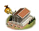
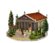
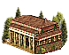
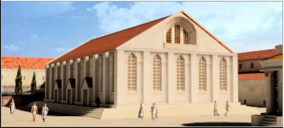
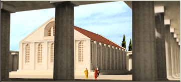
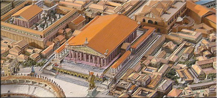
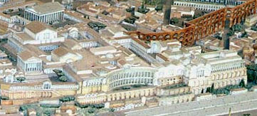

RTR: Imperium Surrectum
RTR: Imperium SurrectumSmall Treasury chain
4 levels, each replacing the one before it — you upgrade in place rather than building alongside.
Small Treasury → Treasury → Great Treasury → Imperial Treasury
Pictures are the game's own building art. Where a culture ships none of its own, the game falls back to another culture's, and that is what is shown here.
Levels at a glance
| Level | Cost | Build time | Minimum settlement | Upgrades to | Level | Cost | Build time | Minimum settlement | Upgrades to | ||
|---|---|---|---|---|---|---|---|---|---|---|---|
 | Small Treasury | 5,000 | 2 | town | Treasury |  | Treasury | 10,000 | 8 | large town | Great Treasury |
 | Great Treasury | 15,000 | 12 | city | Imperial Treasury | Imperial Treasury | 19,000 | 14 | large city | — |
Costs in denarii, build time in turns.
Small Treasury

This building represents the wealth this region has amassed. By capturing other factional treasuries, you will drastically hurt your enemies and cripple their economy.
Even a small capital must keep its coin somewhere, lest it end up in the hands of thieves, or worse, politicians.
Every city requires a secure place to store its wealth, and this small treasury ensures that tax revenue does not mysteriously vanish between collection and expenditure. Guarded by trusted officials (or at least the ones who haven't been caught yet), it holds the funds necessary for governance, military upkeep, and the occasional lavish festival to keep the people from rioting.
Wording varies by culture: 5 versions of this description exist in the game files.
| Cost | 5,000 denarii | Build time | 2 turns | Minimum settlement | town | Upgrades to | Treasury |
What it does
Show 3 effects that apply only in the circumstances shown
- +1 trade income — only when
hidden_resource capital - +5 taxable income — only when
hidden_resource capital - +1 public order (law) — only when
hidden_resource capital
Treasury

This building represents the wealth this region has amassed. By capturing other factional treasuries, you will drastically hurt your enemies and cripple their economy.
A great city needs a great treasury, and great accountants to ensure nobody ‘misplaces’ the coin.
As Rome expands, so too does its need for financial oversight. This treasury, reinforced and watched by the quaestors, the elected officials who supervise the state treasury and conduct audits, houses the growing wealth of the Republic: tax revenues, tributes from allies (both willing and unwilling), and the vast spoils of war. From these coffers, roads are paved, temples rise, and legions march forth. Just don't ask where last year's surplus went.
In Roman mythology, Saturn ruled during the Golden Age, and he continued to be associated with wealth. His temple housed the treasury, the aerarium, where the Roman Republic's reserves of gold and silver were stored. The state archives and the insignia and official scale for the weighing of metals were also housed there.
Wording varies by culture: 5 versions of this description exist in the game files.
| Cost | 10,000 denarii | Build time | 8 turns | Minimum settlement | large town | Upgrades to | Great Treasury |
What it does
Show 3 effects that apply only in the circumstances shown
- +2 trade income — only when
hidden_resource capital - +10 taxable income — only when
hidden_resource capital - +1 public order (law) — only when
hidden_resource capital
Great Treasury

This building represents the wealth this region has amassed. By capturing other factional treasuries, you will drastically hurt your enemies and cripple their economy.
The Senate and People of Rome ensure that every coin is accounted for. Mostly.
Now housed within mighty vaults, the Republic’s wealth is greater than ever. Taxed from the provinces, seized from defeated enemies, and "gifted" by foreign rulers seeking our favour, these vast reserves stored in the Temple of Saturn fund Rome’s roads, armies, and less-than-subtle bribes. Guarded by the state, managed by officials, and eyed enviously by ambitious men, this treasury is the beating heart of Roman power.
In Roman mythology, Saturn ruled during the Golden Age, and he continued to be associated with wealth. His temple housed the treasury, the aerarium, where the Roman Republic's reserves of gold and silver were stored. The state archives and the insignia and official scale for the weighing of metals were also housed there.
Wording varies by culture: 6 versions of this description exist in the game files.
| Cost | 15,000 denarii | Build time | 12 turns | Minimum settlement | city | Upgrades to | Imperial Treasury |
What it does
Show 3 effects that apply only in the circumstances shown
- +2 trade income — only when
hidden_resource capital - +15 taxable income — only when
hidden_resource capital - +2 public order (law) — only when
hidden_resource capital
Imperial Treasury

This building represents the wealth this region has amassed. By capturing other factional treasuries, you will drastically hurt your enemies and cripple their economy.
Rome’s might is built on its wealth. And its wealth is built on everyone else’s misfortune.
The Republic is no more; an Empire rises in its place. With provinces stretched across the known world, the imperial treasury overflows with tax revenues, war spoils, and tributes from humbled rulers. Coin flows like the Tiber, making sure that the legions are never unpaid, building monuments, and ensuring Rome’s eternal rule. Of course, with such great wealth comes even greater corruption, but what is Rome without a few scandals?
Wording varies by culture: 4 versions of this description exist in the game files.
| Cost | 19,000 denarii | Build time | 14 turns | Minimum settlement | large city |
What it does
Show 3 effects that apply only in the circumstances shown
- +3 trade income — only when
hidden_resource capital - +20 taxable income — only when
hidden_resource capital - +2 public order (law) — only when
hidden_resource capital